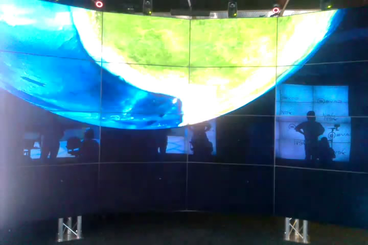
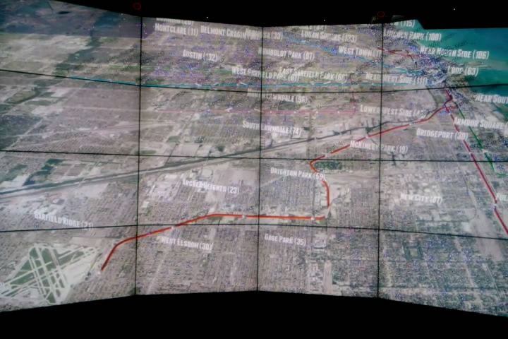
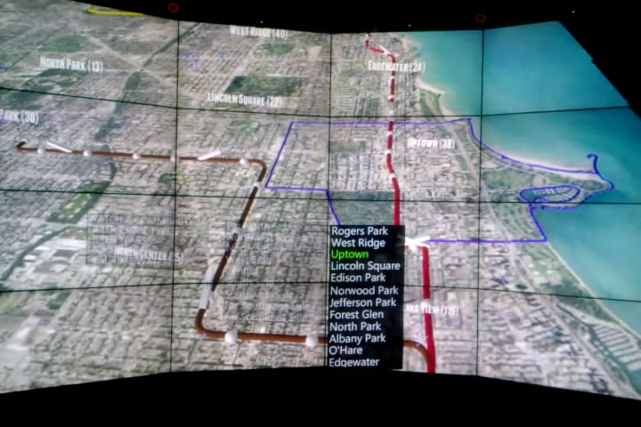
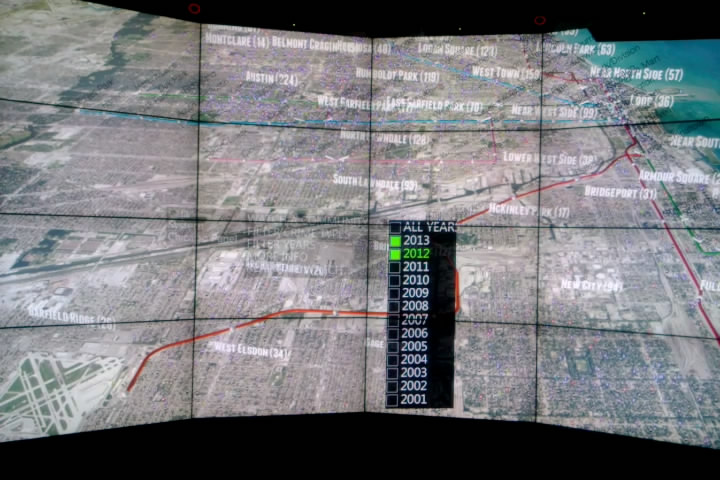
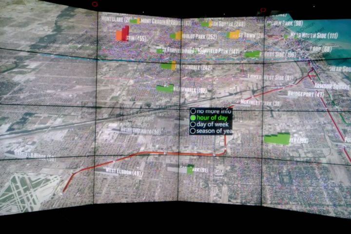
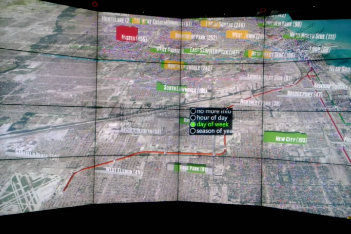

Features and Usage
all features and usages are for running this app on CAVE2 if not noticed otherwise
Start
- Once the app is running, there will be a female voice telling you 'waiting for loading data'
- Once the app is loaded, you will be flying from far away to Chicago (animation)

The Environment
At first you would see:
- CTA 'L' Lines in their corresponding colors
- CTA 'L' Stops and their names, except some in Loop
- name of communities followed by number of crimes in that community
- All types of crimes in 2013
- real time feeds of CTA trains (the higher side is where they are heading)

Navigation
- Use the wand to navigate. Keep Button7 down and move the wand. The camera will transform exactly as your wand moves (translation and rotation). Note: try to move wand slowly at first
- If you lost yourself, press Button5 to reset the scene
- If you are on your laptop, I also implemented navigation, see source code for reference
Change Background
- As long as the menu is not opened, you can press ButtonLeft to change maps in a cycle
- I currently have four maps: mapquestaerial, openstreetmap, yahoo_aerial, and yahoo_map
Watch A Community Area
- There are 77 communities in Chicago. Use 'Menu->Chicago Panel->WATCH A COMMUNITY' to fly to a particular community area
- There might be short pause before the camera actually moves. This is because the app is drawing boundary for the community
- You will be hearing a female voice responding you while camera moves


Real Time Simulation
- Use 'Menu->Chicago Panel->REAL TIME WATCH' to enter or quit simulation mode
- Once you are in simulation mode, use Button2 to start the simulation. You will see a timer on the center top of the screen
- When the simulation is running, press Button3 once will pause it, press Button3 again will stop it
Filter Crime Data
- You can use 'Menu->Chicago Panel->FILTER CRIME TYPES/YEARS' to filter crime data shown in the environment
- If All is selected, you will not be able to uncheck certain year, please uncheck All first
- If you uncheck All, it will go back to the status before you checked All


Analyze Crime Data
- You can also check statistical data of crimes in Chicago by 'Menu->Chicago Panel->MORE INFO'
- Currently there are three options: hour of day, day of week, season of year
- hour of day: you will see four bars in each community area, representing number of crimes in 12am-6am, 6am-12pm, 12pm-6pm and 6pm-12am respectively
- day of week: you will see seven bars, representing seven days in a week starting from Sunday
- season of year: you will see four bars. They are Jan-Mar, Apr-Jun, Jul-Sep and Oct-Dec
- If the number is greater than 80% of the maximum number, the bar will be red
- If the number is between 60% and 80% of the maximum number, the bar will be orange
- If the number is between 40% and 60% of the maximum number, the bar will be yellow
- If the number is between 20% and 40% of the maximum number, the bar will be green
- If the number is lower than 20% of the maximum number, the bar will be white

